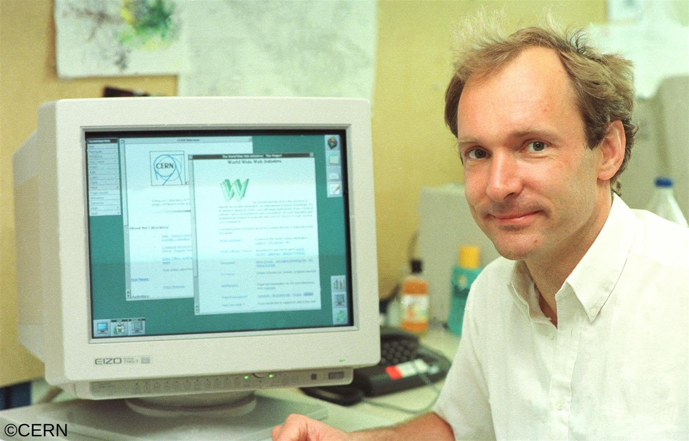
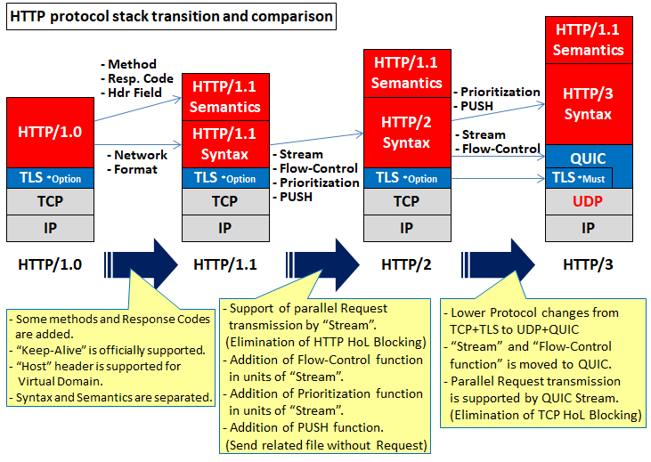

Origins and HTTP/0.9
Tim Berners-Lee proposed a networked hypertext system while working at CERN in 1989 and implemented the World Wide Web during 1990.
The earliest version of HTTP was extremely simple compared with modern HTTP. The version later known as HTTP/0.9 mainly supported a GET request followed by the path of the document being requested. Its main purpose was simply to retrieve hypertext documents from a server.
HTTP/0.9 servers returned the requested document directly to the client. Responses did not contain the status codes, headers, media-type information, or other metadata found in modern HTTP. This meant there were very few ways for the server to provide additional information about the response
This simple design worked well for the Web's original research environment, where relatively few computers and documents were involved. As the Web became public and began supporting more users and types of content, HTTP needed additional features.

HTTP/1.0 and an Extensible Web
HTTP/1.0 was the first version of HTTP to be widely used on the public Web. It was defined in 1996 by RFC 1945 and introduced several new features, including the Content-Type header and the ability to include headers in both requests and responses.
HTTP/1.0 also introduced the concept of status codes, which allowed servers to communicate the outcome of a request to the client. This made it easier for clients to handle errors and for servers to provide more information about the response.
HTTP/1.0 was a significant step forward for the Web, but it still had limitations. For example, it did not support persistent connections, which meant that a new connection had to be established for each request. This led to increased latency and reduced performance.
Despite these limitations, HTTP/1.0 laid the foundation for the future development of the Web and paved the way for the introduction of HTTP/1.1
HTTP/1.1 and the Scalable Commercial Web
HTTP/1.1 introduced persistent connections, which allowed a client and server to reuse the same TCP connection for multiple requests and responses. This reduced the time and network resources needed to repeatedly create new connections.
HTTP/1.1 also introduced other improvements, such as the Host header, which allows multiple domains to be hosted on a single IP address, and the ability to send chunked responses, which enables servers to stream content to clients without having to buffer the entire response.
HTTP/1.1 was standardized in 1997, revised in 1999, reorganized in 2014, and updated again in 2022.
HTTP/2 and Modern Web Performance
HTTP/2 changed how HTTP messages are transmitted by dividing them into smaller units called binary frames. These frames are organized into separate logical streams, allowing the client and server to manage several exchanges over the same connection
HTTP/2 also introduced header compression, which reduces the amount of data that needs to be transmitted over the network.
HTTP/2 was standardized in 2015 and is now widely supported by modern web browsers and servers. It has significantly improved the performance of the Web, especially for complex web applications that require multiple requests and responses.

HTTP/3 and QUIC
HTTP/3 is the latest version of the HTTP protocol, which is built on top of the QUIC transport protocol. QUIC is a new transport protocol that aims to reduce latency and improve performance over traditional TCP-based connections.
HTTP/3 was standardized in 2022 and is beginning to be adopted by modern web browsers and servers. It has the potential to further improve the performance of the Web, especially for applications that require low latency and high reliability.